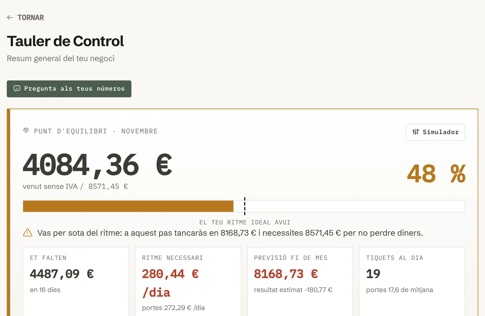

Hostaleria · Assessoria · App · Esdeveniments
Que el teu local funcioni com ha de funcionar..
Assessorem, gestionem i creem experiències gastronòmiques. Tres maneres de treballar amb tu i una sola idea: que el negoci es noti a la caixa i a la taula.


Experiència
8 anys
en cuina, sala i gestió de restaurants
L'app
Sense internet
funciona encara que es talli la connexió
Idiomes
ES · CA · EN
l'app i el web, en tres idiomes
Per on comencem
Tria com vols que t'ajudi.
010203
Assessoria
Un diagnòstic sense adorns i un pla de quatre setmanes per a bars, restaurants i cafeteries que necessiten un canvi real.
L'app
TPV, cuina, reserves, personal i números en un sol lloc. Una llicència a l'any, configurada amb tu.
Le Petit Comité
Esdeveniments privats, tastos guiats i xef a domicili. Ens ocupem de tot; tu només t'asseus a taula.
Parlem del teu local?
La primera conversa no et costa res. M'expliques la teva situació i et dic per on començaria.